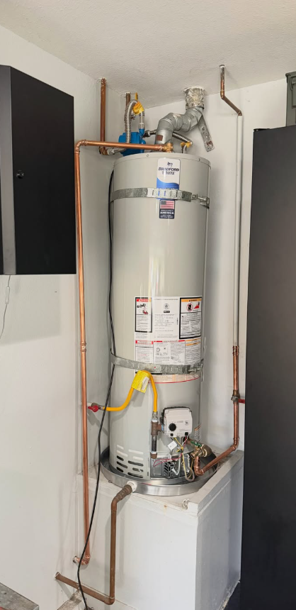
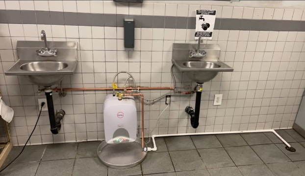
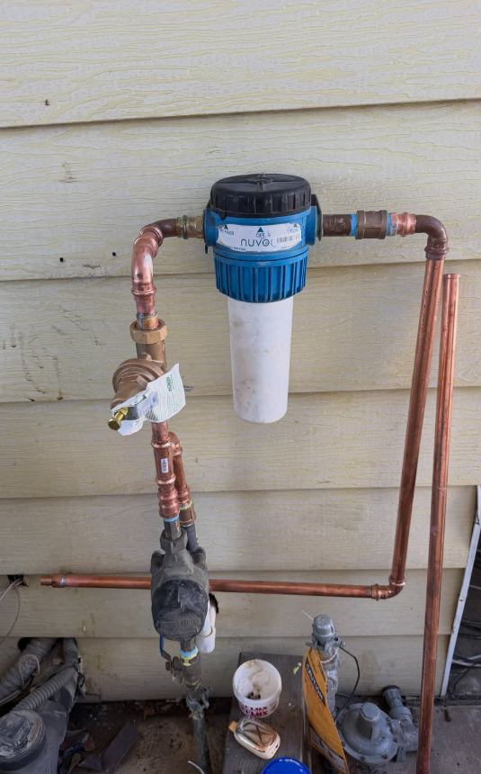
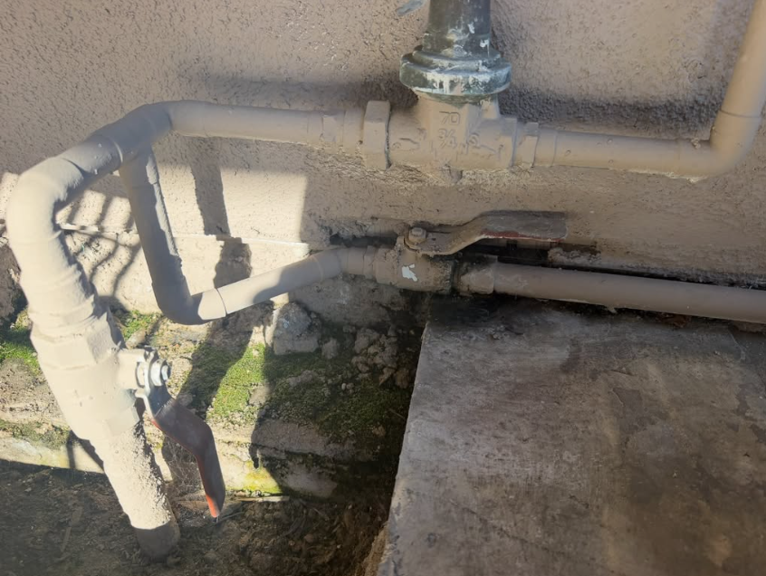
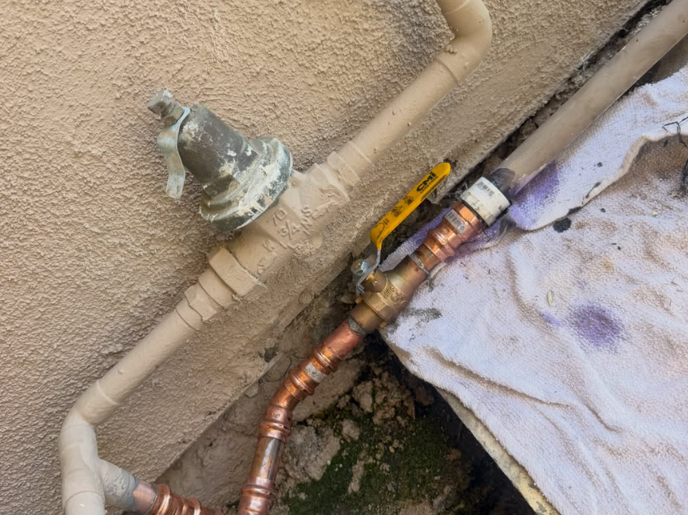

01
Plumbing
Repairs, installations, water heaters, fixture work, piping and everyday plumbing needs.
All the plumbing you need, at a price you'll love, for the family you cherish. Plumbing, drain cleaning and rooter service throughout Ventura County and Santa Barbara County.
From everyday plumbing repairs to stubborn drain and rooter problems, Hansen's brings practical experience and straightforward service to homes and businesses.
Repairs, installations, water heaters, fixture work, piping and everyday plumbing needs.
Professional drain clearing for slow, backed-up and recurring drain problems.
Rooter service for tougher blockages and drain-line issues that need more than a quick fix.
Actual project photos supplied by Hansen's Plumbing and Rooter.





With 10 years of plumbing experience, Kole Hansen's Plumbing and Rooter serves local homeowners and businesses with hands-on knowledge across plumbing, drain cleaning and rooter work.
Choose your city for a dedicated local service page with plumbing, drain cleaning and rooter information for your area.